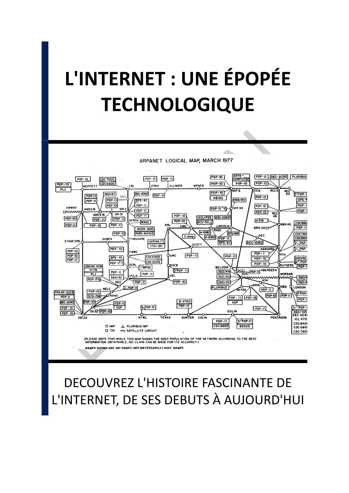

- INTRODUCTION - L'INTERNET : UNE EPOPEE TECHNOLOGIQUE
- Chapitre 1 - LES ORIGINES DE L'INTERNET : ARPANET ET SES PRECURSEURS
- Chapitre 2 - L'AVENEMENT DU PROTOCOLE TCP/IP
- Chapitre 3 - LES PREMIERES INTERFACES : NAVIGATEURS ET ACCESSIBILITE
- Chapitre 4 - L'IMPACT DES RESEAUX SOCIAUX ET DE L'ECONOMIE COLLABORATIVE
- Chapitre 5 - LES AVANCEES TECHNOLOGIQUES RECENTES : 5G, IOT ET IA
- Chapitre 6 - CONSEQUENCES SOCIALES ET CULTURELLES DE L'INTERNET
- Chapitre 7 - LES DEFIS DE LA GOUVERNANCE ET DE LA SECURITE SUR INTERNET
- Chapitre 8 - LES PERSONNALITES CLES ET LES ENTREPRISES PIONNIERES DE L'INTERNET
- CONCLUSION - L'INTERNET : UNE EPOPEE EN CONSTANTE EVOLUTION
📄 Consulter les annexes du livre
Mentions légales